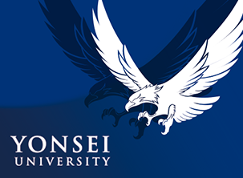
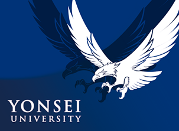

Operations & Information Management
Minjeong An
Master’s student in Operations Management
I study human–AI interaction, the operational impacts of AI, and data-driven decision making at Yonsei University.
Academic interests span machine learning, analytical modeling, optimization, experimental methods, and econometrics.

About
I am a Master’s student in Operations Management at Yonsei University, advised by Professor Seunghwan Jung. My research focuses on how AI and data-driven methods reshape operations, markets, and human decision making.
I received my B.B.A. from Yonsei University, where I was recognized with multiple merit-based scholarships, semester honors, and class MVP awards in analytics and operations courses.
Research
Research Interests
Human–AI interaction; operational impacts of AI; data-driven decision making; strategic behavior. Methodologically, I work with machine learning, analytical modeling, optimization, experimental methods, and econometrics.
Academic Papers
-
Demand forecasting in micro-fulfillment centers using association rule-based machine learningInternational Journal of Production Economics, 109789.Methodology: machine learning, large-scale data processing, statistical analysis, empirical forecast evaluation.Published in International Journal of Production Economics.Presented at the 2025 POMS Annual Conference.Awarded Best Paper (1st Place) at the Korea Production and Operations Management Society (KOPOMS) Spring Conference, 2025.
-
Government financing and its implications for small and medium-sized enterprises in the competitive green-product manufacturing industrySubmitted to OMEGA—The International Journal of Management Science.Presented at the 2025 INFORMS Annual Meeting, Atlanta, GA.
-
Correlation-based variable screening method for real-time demand forecasting in the retail industryMethodology: machine learning, large-scale data processing, statistical analysis.To be submitted to Korea Distribution Association.Presented at The Korean Academic Society of Business Administration, 2025, Ulsan, South Korea.
Dissertation (in progress)
-
Effects of API disclosure in generative AI on user trust and behavioral performance: The moderating role of AI specializationMethodology: experimental design, regression analysis, UI/UX development, statistical analysis.Awarded Outstanding Paper (2nd Place) at the Korean Production and Operations Management Society (KOPOMS) Fall Conference, 2025.Will be presented at the 2026 POMS Annual Conference.
Academic Services
Reviewer for Computers & Industrial Engineering.
Selected Presentations
-
On the value of cross-item information in forecasting volatile demand of MFCsMay 2025, POMS Annual Conference, Atlanta, GA.May 2025, Spring Conference of the Korea Production and Operations Management Society (KOPOMS), Seoul, South Korea.
-
Welfare vs. revenue: Optimal government loan design for green productionNov 2025, INFORMS Annual Meeting, Atlanta, GA.
-
Machine learning–based model for freight volume prediction using wholesale logistics transaction dataAug 2025, Spring Conference of The Korean Academic Society of Business Administration, Ulsan, South Korea.
-
Effects of API disclosure in generative AI on user trust and behavioral performance: The moderating role of AI specializationNov 2025, Fall Conference of the Korea Production and Operations Management Society (KOPOMS), Seoul, South Korea.
Awards & Honors
Selected scholarships, academic honors, and awards.
-
Semester Highest Honors for Top 1% Students, Yonsei University, 2022.Semester Honors for Top 3% Students, Yonsei University, 2023.Class-MVP Award (1st Place), Management Science, Yonsei University, 2020.Class-MVP Award (1st Place), Supply Chain Analytics, Yonsei University, 2022.Class-MVP Award (1st Place), Management Accounting, Yonsei University, 2023.Class-MVP Award (1st Place), Decision Making Under Uncertainty, Yonsei University, 2024.Best Paper Award, Korea Production & Operations Management Society (KOPOMS) Spring Conference, 2025.National Scholarship, Korea Student Aid Foundation, 2019–2024.YBK New Leader (Blue Butterfly) Scholarship, Yonsei Business School, 2019–2022.Teaching Activity Scholarship, Institute for Higher Education Innovation, Yonsei University, 2019.Wooin Scholarship (Merit-based), Wooin Scholarship Foundation, 2020.Research Scholarship, Yonsei Business Research Institute (YBRI), 2023–2024.Yonsei Incentive Scholarship, Yonsei University, 2023.Cheonghan Scholarship (Merit-based), Cheonghan Scholarship Foundation, 2024.Blue Butterfly Academic Track Scholarship, Yonsei Business School, 2024.International Collaborative Research Scholarship, Yonsei University, 2024.Yuhan Foundation Scholarship (Merit-based), Yuhan Foundation, 2024–2025.Brain Korea 21 Scholarship, National Research Foundation of Korea, 2025.OK Bae & Jung Scholarship (Merit-based), OK Bae & Jung Scholarship Foundation, 2025.
Teaching Experience
Teaching Assistant, Yonsei University.
-
Undergraduate, Service Operations Management, 2024.Undergraduate, Production and Operations Management, 2024.Undergraduate, Operations Management, 2025.Undergraduate, Supply Chain Analytics, 2025.Undergraduate, AI and Operations Analytics, 2025.Undergraduate, Stochastic Inventory Management Models, 2025.MBA, Business Statistics, 2025.MBA, Operations and Supply Chain Management, 2025.MBA, Business Data Analysis Methods, 2025.MBA, Business Analytics for Executives, 2025.MBP, Operations Management, 2025.
Other Experiences
-
Undergraduate Research Assistant, Prof. Jung's Lab, Yonsei University, 2023–2024.Research Intern, Yonsei Business Research Institute (YBRI), Yonsei University, 2023–2024.Founding Team Member, Joyful World (online retail startup), 2021–2022.Deputy Director, Strategy Division, Student Government Election Campaign Headquarters, Yonsei University, 2020.Director, Culture & Career Development Division, Emergency Planning Committee, College of Business & Economics, Yonsei University, 2020–2021.Head of Planning Committee, Faith Orientation Program, Chaplain’s Office, Yonsei University (led planning and execution of a 3-day program for 200–300 participants), 2022.University Student Advisory Committee Member, Iseum Foundation (Committee Leader for one year), 2021–2022.Co-author (under pen name), Surviving in the Darkness, Hakjisa, 2022.
Contact
Email
amj5070@yonsei.ac.kr
Affiliation
Master’s Student, Operations Management, Yonsei
University
Address
Yonsei University, School of Business
Seoul, South
Korea